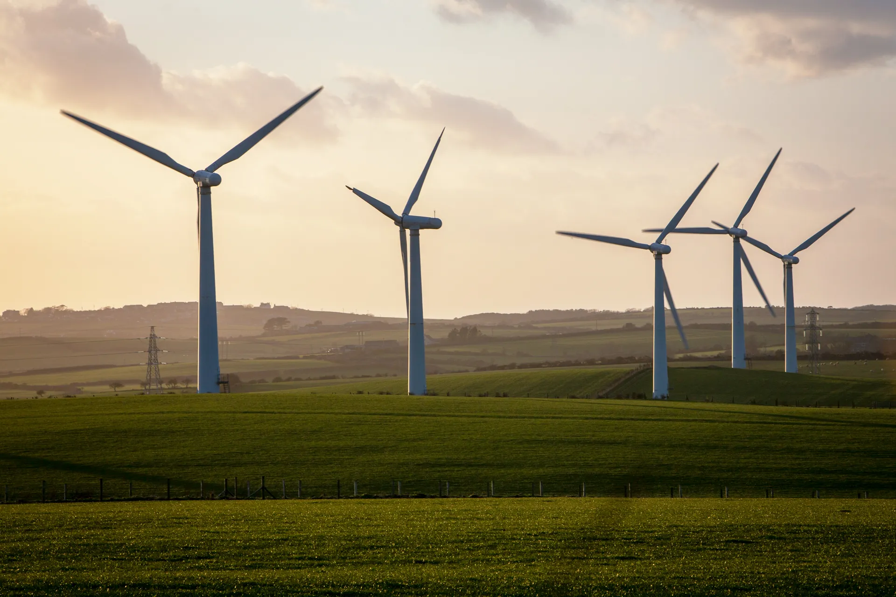
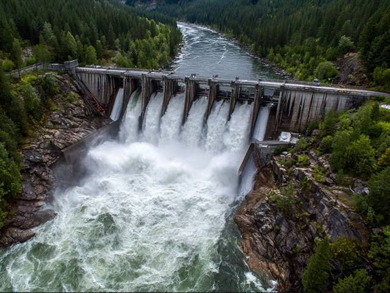
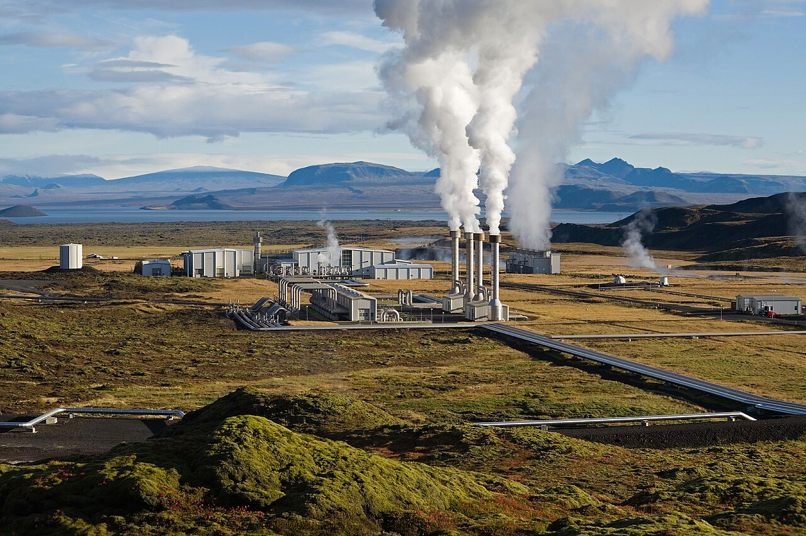

"Renewable energy" is a term often used in discussions about climate change, but many people are unsure what it really means or how it can be adopted in everyday life. This page explains the main sources of renewable energy and highlights practical, effective ways to make use of them through simple, sustainable choices.
What Is Renewable Energy?
Renewable energy is energy generated from natural sources that replenish themselves faster than they are consumed. These sources include sunlight, wind, water, and heat from within the earth, and are commonly measured in kilowatt-hours (kWh) or megawatts (MW) of generating capacity. Renewable energy helps us understand how power can be produced without depleting finite resources or releasing large amounts of greenhouse gases.
Renewable energy systems can be used at both large and small scales. Large-scale generation comes from activities such as utility solar farms or offshore wind arrays, while small-scale generation is produced through rooftop panels, micro-hydro systems, and household-level installations that individuals and communities use every day. Understanding these sources is the first step toward making more sustainable choices and reducing our reliance on fossil fuels.
How It's Generated
The three main pathways
Renewable electricity generation is grouped into three broad categories. Solar converts sunlight directly into electricity or heat, Wind captures moving air through turbines, and Hydro & other sources covers water, geothermal heat, and biomass that support daily power supply. Wind is often the fastest-growing part of a country's renewable mix.
Why national averages mislead
National average renewable energy figures are useful for comparing countries, but they do not reflect the wide differences between regions and households. An area with strong sun, wind, or water resources and supportive infrastructure can generate a much higher share of clean power than an area that still relies heavily on fossil fuels. This is why local investment matters, and why understanding your own energy sources is an important step towards reducing climate change.
Solar Energy

Solar power is one of the fastest-growing sources of renewable electricity worldwide. Photovoltaic panels convert sunlight directly into electricity, while solar thermal systems use the sun's heat for hot water or space heating. Choosing solar power where possible can reduce emissions immediately and make a meaningful contribution to protecting the environment.
- Rooftop solar panels can offset a household's electricity use and, in some cases, feed surplus power back into the grid.
- Community solar schemes generally produce far lower lifetime emissions per unit of electricity than fossil-fuel power stations.
- Sharing or leasing solar capacity with neighbours reduces upfront cost, increases uptake, and helps decrease reliance on the wider grid.
Wind Energy

Wind used for electricity generation contributes significantly to a clean power supply. The environmental impact depends on where the turbines are sited, with well-placed onshore and offshore farms producing far fewer emissions than fossil fuels over their lifetime. Simple actions such as supporting local wind projects, choosing a green electricity tariff, and reducing unnecessary electricity use can help lower both energy demand and your carbon footprint.
Onshore Wind
Onshore wind farms account for a large share of installed wind capacity worldwide. Choosing sites with steady wind speeds and minimal disruption to local communities is a simple way to lower carbon emissions and generate reliable energy.
Offshore Wind
Building wind farms out at sea can significantly increase the amount of clean electricity generated, since offshore winds tend to be stronger and steadier, helping lower environmental impact without changing land use on the coast.
Hydropower

Hydropower contributes significantly to global renewable electricity generation. In general, small-scale and run-of-river hydro systems have a lower environmental impact than large dams that require extensive land, water, and energy to build. Choosing more sustainable hydro projects, reducing water waste, and supporting balanced water management can help lower your carbon footprint while supporting a healthier planet.
- Including more run-of-river hydro schemes in a region's energy mix can significantly reduce the carbon emissions associated with electricity production.
- Reducing water waste helps conserve the resources used to generate, store, and distribute hydroelectric power.
- Planning reservoir use, maintaining infrastructure, and monitoring river flow are simple ways to reduce waste and support a more sustainable energy supply.
Geothermal & Other Sources

Geothermal and biomass energy may seem like a small part of the renewable mix, but they still have an important environmental impact. Generating power from underground heat, reusing organic waste for biomass energy, avoiding inefficient systems, and choosing durable infrastructure helps conserve natural resources and reduces reliance on fossil fuels. Proper site selection is especially important, as poorly managed geothermal or biomass projects can reduce efficiency and increase local environmental impact.
Investing in geothermal heating, reusing agricultural or organic waste, and choosing well-managed renewable projects has a greater environmental benefit than relying on fossil fuels alone, as it helps avoid the emissions generated during extraction and combustion.
Common Myths
Switching to Renewable Energy
Switching to renewable energy does not require completely changing your lifestyle overnight. Making a few realistic and consistent changes, such as choosing a green electricity tariff, installing solar panels where possible, supporting local wind or hydro projects, or reducing overall electricity use, can create a meaningful impact over time. Start with the changes that are easiest to adopt and gradually build more sustainable habits.